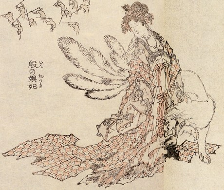

Thế kỷ XII trước J.C vào khoảng những năm 1166 đến 1134, nghĩa là cách đây trên 3090 năm, bên Tàu có Thọ - Tân Hoàng đế là ông Vua cuối cùng của nhà Thương, trong Sử thường gọi là Vua Trụ. Ông là người rất thông minh, lại có tài hùng biện. Các quan Triều – thần tâu sơ qua một việc gì là ông hiểu thấu triệt vấn đề, và hành động rất mau lẹ. Ông làm điều chi quấy, có ai can gián, ông lấy lý lẽ để bào chữa rất trôi chảy, thuyết phục được mọi người và ai cũng cho ông là có lý. Nhà vua lại có sức mạnh phi thường. Sử xưa chép rằng tay không ông vật ngã một lần 9 con trâu, bưng nổi cột nhà, làm gãy cả xà trinh.Sức mạnh của Vua Trụ không kém gì Hạng Võ, và không thua gì Hercule trong thần thoại Hy Lạp.

Nước Tàu lúc bấy giờ đã văn minh phồn thịnh. Những ông Vua cuối cùng của Triều đại nhà Thương, Võ- Ất, Thái – Đinh, Đế Ất, Thọ Tân, đều ăn chơi xa xỉ, yến tiệc linh đình, và xa hoa dâm đãng. Vua Trụ lại rất là tàn bạo, không khác gì Hoàng đế Néron của La Mã.
Và, cũng như Néron, Vua Trụ đã mất nước và bị giết chết rất thảm hại, chỉ vì một người đàn bà!
CÔ GÁI NHÀ HỌ TÔ LÀM SỤP CẢ MỘT TRIỀU ĐẠI TRUNG QUỐC
Muốn tâng công với vua Trụ, một tiểu tướng họ Tô đem đứa con gái út tên là Đắt Kỷ dâng cho Hoàng Đế. Đắt Kỷ có một nhan sắc lộng lẫy, sắc sảo, ăn đứt tất cả các phi tần cung nữ mà vua Trụ đã sai người đi tìm kiếm khắp nước đem về nuôi trong cung điện để thỏa thích dục tình.
Từ ngày có Đắt Kỷ, nhà vua chê ghét hết các cung tần, bỏ bê cả việc nước, ngày đêm chỉ say mê bên cạnh Đắt Kỷ mà thôi. Nàng khéo chiều vua, khéo tâng bốc nịnh bợ, khéo mơn trớn vuốt ve. Với đôi bàn tay ngọc, với một nụ cười, đôi khóe mắt, nàng làm cho Trụ vương như ngây như dại, cả uy quyền bạo ngược của Chúa tể đều để cho một tay nàng sai khiến.
Miệt mài trong cuộc truy hoan, đắm say tửu sắc, vua Trụ chấp nhận tất cả những gì Đắt Kỷ làm, và Đắt Kỷ có bàn định những việc chi, nhà vua cũng gật đầu cười: “Phải! Phải!”. Nàng tâu xin với vua bổ nhậm hai người anh của nàng. Tô Địch và Tô Thành làm chức quan Đại trào để thao túng mọi việc chính trị trong nước. Vua Trụ gật đầu: “Được! Được!” Tô Địch là một tay tàn bạo khét tiếng, dựa uy thế của em gái và của Vua mà làm biết bao nhiêu chuyện hà lạm trong nước và khắc khổ nhân dân. Người ta đã đặt cho y biệt hiệu là Ác Lai.
Đắt Kỷ thấy vua Trụ thích chuyện dâm dục, bèn truyền lịnh cho nhạc sư tên là QUyên đặt ra một bản nhạc dâm ô. Theo Sử Tàu, thì bản nhạc này trồi lên là ai nghe cũng phải nảy lòng dâm dật. Nhưng Đắt Kỷ vẫn chưa bằng lòng, còn muốn thấy một điệu múa làm cho xúc động cả tâm thần vua Trụ, và bày ra vũ khúc “Bắc Lý”.
Nghe lời Đắt Kỷ, vua Trụ cho xây “lộc đài” rộng ba dặm, cao một ngàn thước, bắt dân đóng thuế thật nặng, để bỏ tiền vào đấy cho đầy kho. Lại cắt kho “Cự kiêu” rất lớn để chứa đầy thóc lúa.
Vua lập ra “Khuyển đài” ở chốn Sa-Khưu để nuôi hàng trăm nghìn chó, ngựa, cọp, beo, khỉ, để cho Đắt Kỷ săn bán, dựng hí trường để nhân dân ca hát cho Đắt Kỷ nghe. Nàng băt sđào một cái ao rộng 25 dặm để chứa rượu, rồi mỗi lần bảo 300 người chu mỏ hụp xuống ao uống như trâu ngựa để nàng xem. Nàng bắt trai gái cởi truồng múa hát suốt đêm trong vườn Thượng uyển trong lúc nhạc công thổi nhạc dâm ô, và Vua Trụ ngồi trên lầu uống rượu với nàng, nhìn xuống cười cho thỏa thích.
Kẻ phạm tội bất tuân lệnh của nàng, thì bị trói tay dẫn đến trước mặt đông đủ bá quan. Vua Trụ nghe theo lời Đắt Kỷ, sai lính chất một đống củi to lớn, đốt cho cháy đỏ phừng, bắt ngang trên lửa một cây cầu bằng đồng bôi mỡ, rồi khiến tội nhân phải leo lên đi trên cầu. Bị cháy nóng và mỡ trơn, tội nhân phỏng chân té nhào xuống lửa, thì Đắt Kỷ khoái chí cười ngất. Vua Trụ cũng cười sặc sụa, khiến các quan triều thần ai cũng phải cười để được lòng Vua và Hoàng hậu.
Theo Sử Tàu chép lại, thì Vua Trụ nghe lời nàng Đắt Kỷ mà giết người cho đến đỗi say máu và ăn cả thịt người nữa. Một vị chư hầu, tên là Cừu đem con gái đẹp đến dâng Vua Trụ. Đắt Kỷ ghen, bảo Vua Trụ giết đi và giết cả Cừu hầu, lấy thịt làm mắm.Ngạc hầu đem lời can gián, vua Trụ bắt giết luôn Ngạc hầu, lấy thịt làm nem.
Cổ Công Đản (tức là Chu Văn Vương) là bậc hiền triết, có đạo đức, từ tâm, làm chức Tây bÁ bị vua Trụ bắt bỏ tù ở Dữu Lý. Người con trai trưởng của Văn Vương là Bá Ấp Khảo đến thăm cha, bị vua Trị giết làm thịt nấu canh, và đem canh đãi Văn Vương. Văn Vương không biết, cứ ăn. Vua Trụ liền nói: “Ta nghe Tây Bá là bực Thánh nhân mà nay ăn thịt của con thì đâu phải là Thánh nhân cả!” Đắt Kỷ thích chí cười rầm lên.
Chính sách và hành động của Vua Trụ và của nàng Đắt Kỷ khiến cho những người can trực trong Triều đình phẩn uất. Dân chúng muốn nổi loạn. Hai phần ba thiên hạ theo nhà Chu. Ba vị đại thần là Vi Tử, Cơ Tử và Tỷ Can liền khuyên răn Vua, nhưng Vua không nghe. Tỷ Can là chú ruột của Vua, rất oán ghét Đắt Kỷ. Đắt Kỷ quyết trả thù cho hả giận. Một hôm, Đắt Kỷ bị đau bụng (nàng có chứng bịnh đau bụng kinh niên). Nàng nói với vua Trụ:
- Thầy thuốc bảo rằng bịnh của thiếp chỉ có lấy trai tim của Tỷ Can sắc thuốc uống là khỏi hẳn, vì Tỷ Can là bậc Thánh nhân, mà trái tim của Thánh nhân có bảy lỗ, khác với người phàm.
Vua Trụ nghe theo lời của Đắt Kỷ, truyền đòi Tỷ Can đến để mổ bụng lấy trái tim làm thuốc cho nàng uống.
Truyền ký huyễn hoặc lại kể thêm rằng trước khi Tỷ Can ra đi, thầy của Tỷ Can có tu phép Tiên cho Tỷ Can một lá bùa và dặn Tỷ Can: chừng nào họ mổ lấy trái tim xong, Tỷ Can đắp cái bùa lên chỗ mổ và lúc ra về ai hỏi gì cũng đừng nói, thì khỏi chết. Tỷ Can đến, Đắt Kỷ truyền lịnh mổ bụng lấy trái tim xong rồi, ông đắp lá bùa lên vết mổ và thản nhiên ra về. Giữa đường, Tỷ Can gặp muộn cô gái bưng thúng rau muống (Theo truyền ký thì Đắt Kỷ vốn là loài Hồ ly tinh hóa ra người con gái ấy) chặn đường Tỷ Can, hỏi: “Ông có mua rau vô tâm không?” Cọng rau muống không có ruột, nên gọi là “rau vô tâm”, và có ý ngạo Tỷ Can đã bị mổ tim rồi, trong ruột trống rỗng như cọng rau muống. Tỷ Can làm thinh, nhất định không nói một lời, theo lời dặn của thầy. Nhưng cô gái bán rau muống cứ đi theo hỏi mãi, Tỷ Can tức giận không thể làm thinh được nữa, mắng một câu thì tự nhiên ông ngã gục xuống chết liền.
Chính sách tàn bạo và khốc liệt của Vua Trụ vì nghe theo Đắt Kỷ, đã gây ra oán giận khắp dân gian. Giặc dậy nơi nơi, các nước chư hầu đua nhau khởi nghĩa. Con trai của Văn Vương là Cơ Phát, làm chức Tây Bá, (sau lên ngôi là Chu Võ Vương), hội 100 nước chư hầu tại bên Mạnh Tân, tuyên bố tội trạng của vua TRụ và Đắt Kỷ, cử Lã Vọng làm nguyên soái, kéo quân đi trừ diệt kẻ hôn quân. Hai ông Bá Di, Thúc Tề gõ cương ngựa lại can, Võ Vương không nghe và quyết tiến binh.
Vua Trụ thua chạy vào Lộc đài, rồi bận áo đeo đầy những ngọc ngà châu báu, nhảy vào lửa chết. Võ Vương chiến thắng cầm cây Đại Bạch Kỷ vào thẳng thành tới chỗ vua Trụ chết, chỉ còn cái xác cháy. Ngài lấy gươm vàng chém đầu Trụ, treo lên chót cây cờ trắng và giết luôn Đắt Kỷ.
Thế là Triều đại nhà Thương bền được 661 năm, đến đời vua Trụ, chỉ vì say mê một con ác phụ mà bị sụp đổ thảm hại, trong máu và trong lửa.
Đến nay đã trên 3000 năm, cái tên gớm giếc của Đắt Kỷ trong Lịch sử Trung Hoa vẫn còn người ta nhắc tới, cũng như Popée, cũng như Agrippine của thời Néron ở La Mã, để làm gương cho những đàn bà hậu thế.